S32K148¶
1 开发环境准备¶
主要工具和环境说明
工具描述 |
名称/版本 |
|---|---|
编译器和IDE |
S32 Design Studio 3.6.7 |
EB工具 |
EB tresos Studio 29.0.0 |
MCAL |
SW32K1_S32M24x_RTD_R21-11_2.0.0_QLP1 |
硬件开发板 |
S32K148EVB-Q176 |
1.1 MCAL编译器和IDE获取¶
MCAL编译器和IDE（S32 Design Studio）的获取步骤如下：
访问NXP官网（https://www.nxp.com），注册恩智浦账号。
登录后访问"Getting Started with the Real-Time Drivers (RTD)"页面。
根据页面指引下载S32 Design Studio for S32 Platform 3.6.7版本。
下载完成后保存安装包到本地目录。
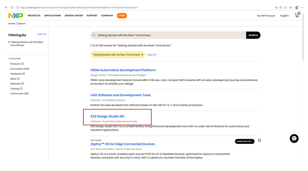
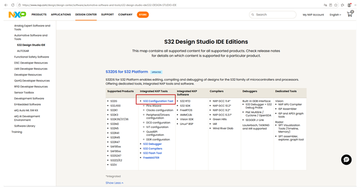
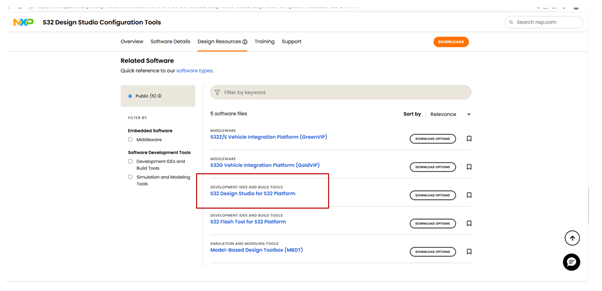
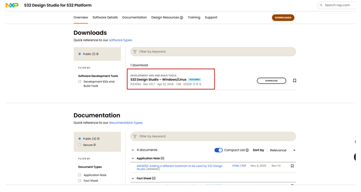
1.2 MCAL配置工具获取¶
MCAL配置工具（EB tresos Studio）的获取步骤：
访问NXP官网并登录恩智浦账号。
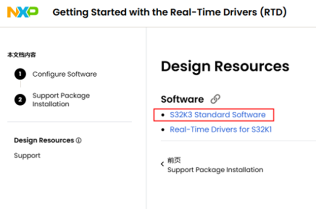
进入"Getting Started with the Real-Time Drivers (RTD)"页面。
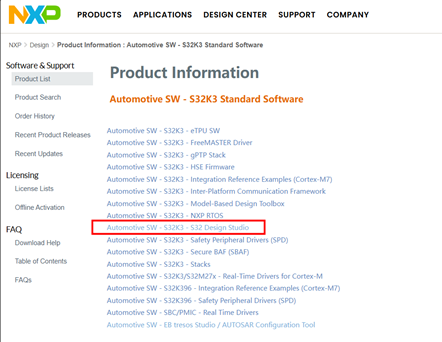
找到EB tresos Studio配置工具下载区域。
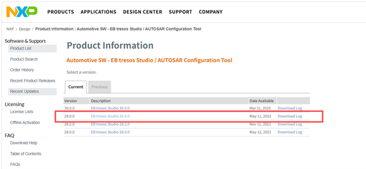
下载EB tresos Studio 29.0.0版本安装包。
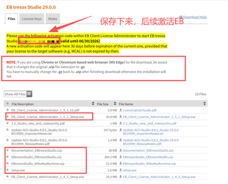
1.3 MCAL安装包和补丁包获取¶
MCAL RTD（Real-Time Drivers）安装包和补丁包的获取：
在NXP官网的RTD页面中找到对应芯片型号的MCAL包。
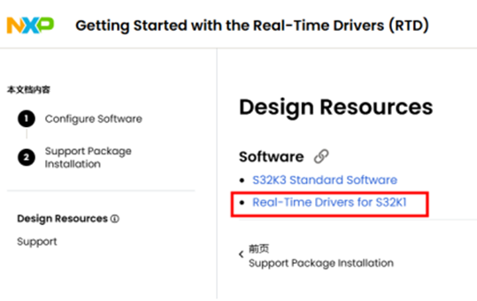
下载SW32K1_S32M24x_RTD_R21-11_2.0.0_QLP1版本的主安装包。
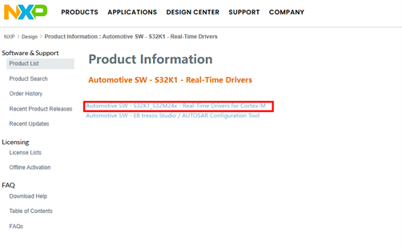
同时下载对应的补丁包（Patch）以确保工具链完整性。
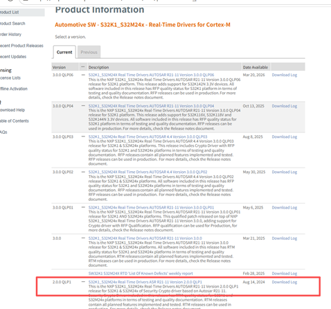
建议将所有下载文件存放在同一目录下以便后续安装管理。
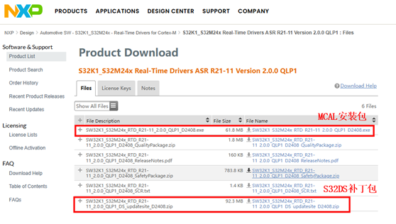
1.4 MCAL配置工具安装¶
EB tresos Studio安装步骤：
双击安装包启动安装向导。
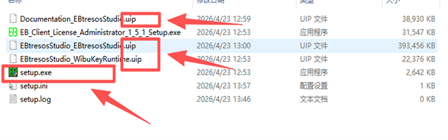
选择安装目录，点击Next。
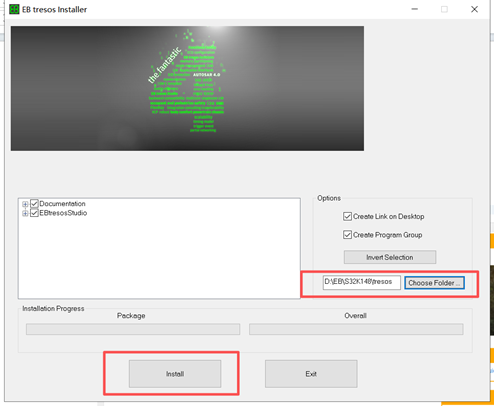
等待安装完成，点击Exit结束安装。
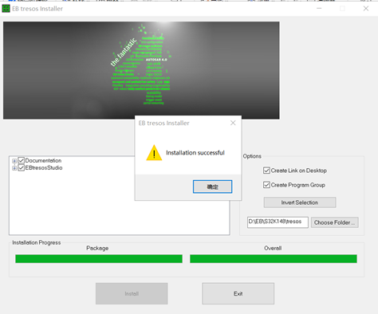
1.5 EB License安装和激活¶
EB tresos Studio License激活流程：
点击安装包进行安装。
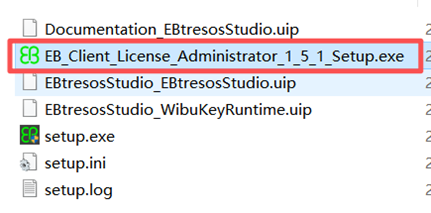
选取安装路径。
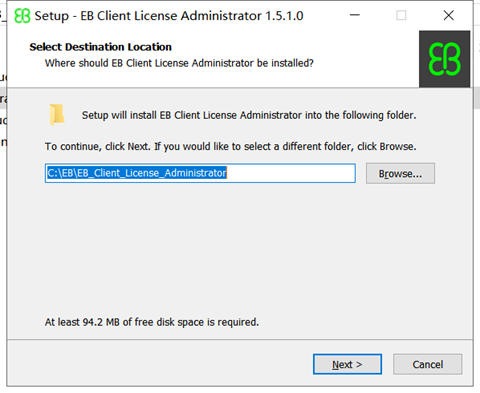
选择License文件所在位置，或选择在线激活方式。
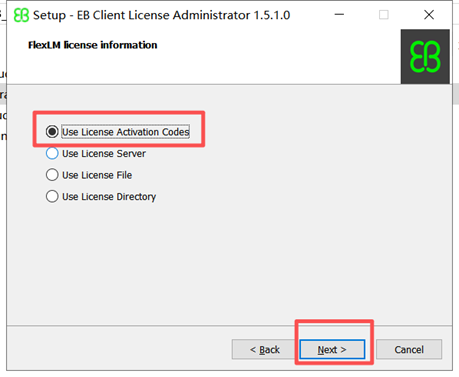
输入之前下载界面记录的License，点击Activate完成激活，等待激活成功提示。
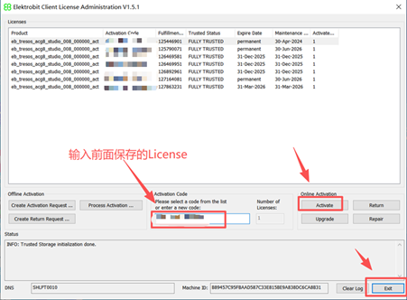
激活成功后重启EB工具使License生效。
1.6 MCAL包安装¶
MCAL包安装到EB tresos Studio的步骤：
双击RTD安装包，执行安装程序。
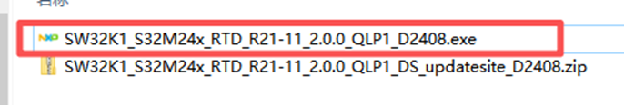
点击Next。
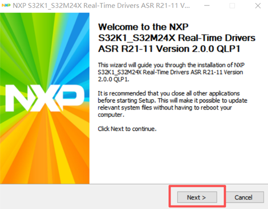
选择同意协议。
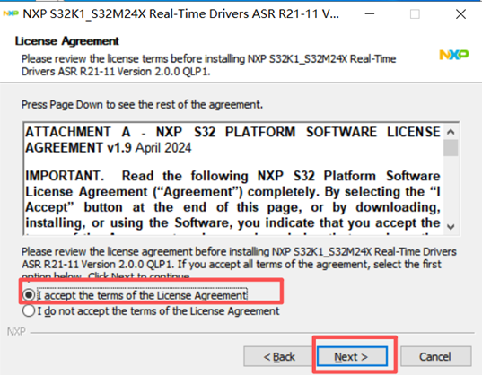
选择安装，点击Next。
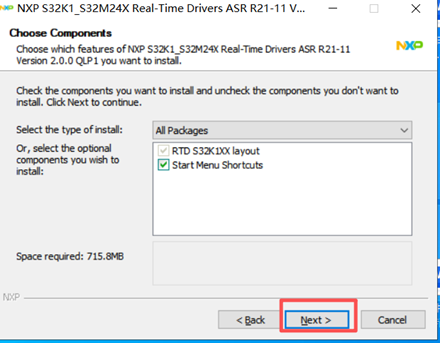
选择安装目录，点击Next。
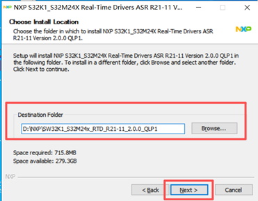
选择EB安装路径。
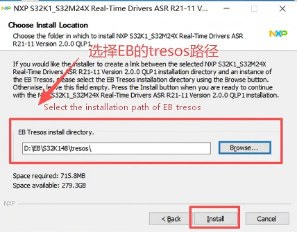
点击Finsih安装完成。
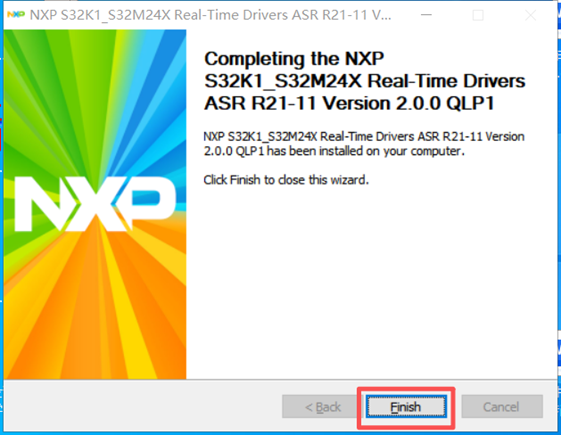
1.7 MCAL编译器和IDE安装¶
S32 Design Studio安装步骤：
双击S32DS安装包启动安装程序。
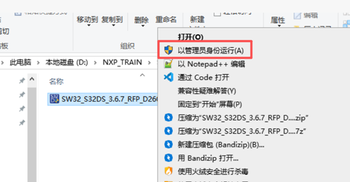
选择安装语言，点击OK继续。
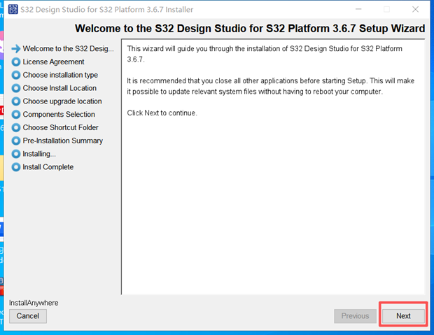
阅读并接受许可协议。
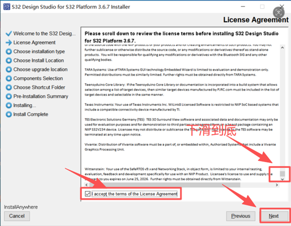
选择安装目录（路径不要包含中文或空格）。
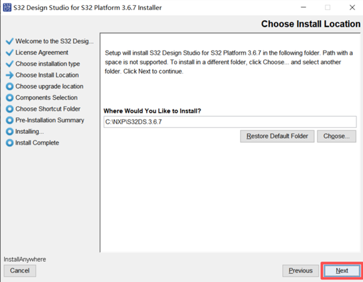
选择需要安装的组件（建议选择全部默认组件）。
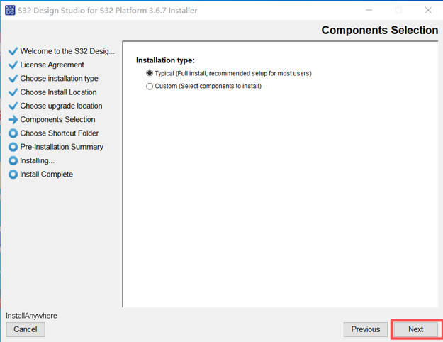
等待安装程序完成文件复制和配置。
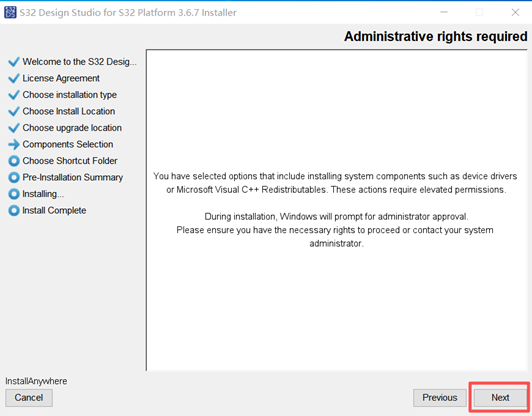
安装完成后勾选Launch S32 Design Studio选项启动IDE。
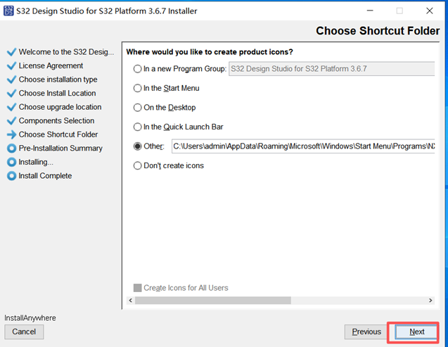
点击Done完成安装。
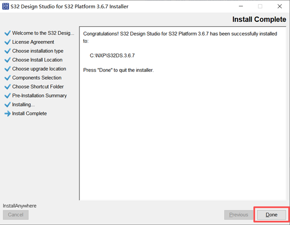
1.8 IDE补丁包安装¶
S32 Design Studio补丁包安装步骤：
在S32 Design Studio中，可通过Help菜单下的"Install New Software"选项安装补丁包，如下图所示
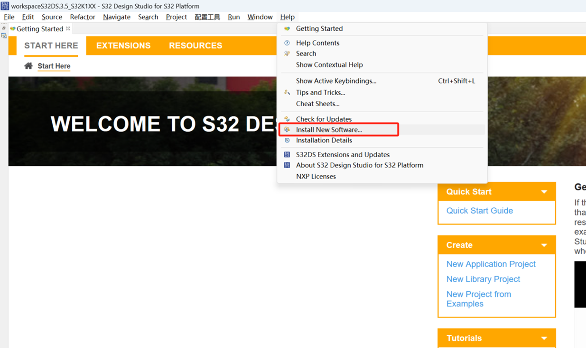
选择本地补丁包。
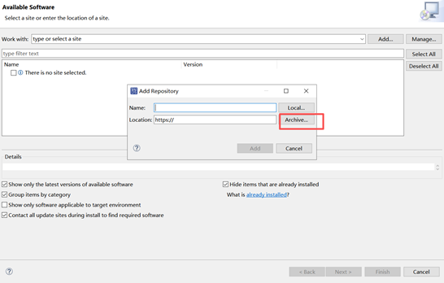
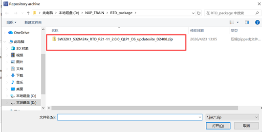
全选补丁包程序，点击Next进行安装。
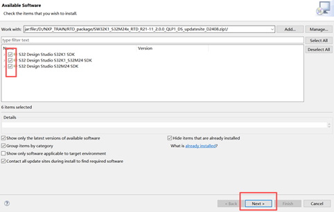
点击Next开始安装。
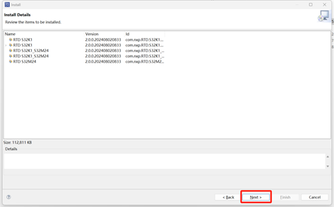
等待补丁安装完成，点击Finish。
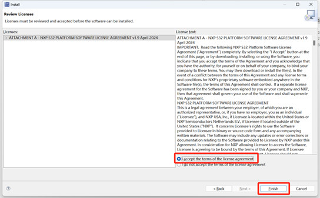
重新启动S32 Design Studio验证补丁是否生效。可在Help > About中查看当前IDE版本和补丁信息。
1.9 BSW配置工具获取¶
申请普华ORIENTAIS Configurator工具软件（for 开源小满）：https://register.easyxmen.com/welcome.html?channel=3。
审核通过后，邮件收到下载链接（含BSW配置工具和示例工程）以及BSW配置工具License。
1.10 BSW配置工具安装¶
1.10.1 安装前须知¶
安装盘符建议：请勿将工具安装于C盘。C盘通常为系统盘，Windows操作系统安装于此，且Windows对C盘的读写权限控制较为严格。
安装路径要求：若工具安装于D盘，请勿使用默认路径。需将安装路径修改为“D:iSoftORIENTAIS_Configurator_for_EasyXMen<版本号>”。安装路径应尽可能简短，也可直接设置为“D:ORIENTAIS_Configurator_for_EasyXMen<版本号>”。不应将工具安装至包含中文字符或空格的文件夹中，也不应安装至层级过深的目录。具体原因请参见第3点。
工作区位置说明：请勿将工作区创建在工具安装目录之外。通常应将其创建在工具安装路径内，例如：“D:iSoftORIENTAIS_Configurator_for_EasyXMen<版本号>workspace”。曾有用户将工作区置于工具外部，且路径中包含中文字符、空格以及过深的层级，导致工具出现间歇性卡死。经分析，本工具基于Java开发，Java包名本身为保持层次清晰而包含多级目录。若再叠加用户工作区过深的层级，整个路径长度可能超出Java访问配置文件的限制，致使配置文件无法访问，从而引起工具卡死。用户遵照本建议创建工作区后，该问题未再出现。
多工程管理建议：在满足以上三项建议的前提下，若工作区中创建了多个Project，可右键单击Project名称，在弹出菜单中选择“Close Project”以关闭不使用的工程。需要使用时，再通过“Open Project”将其打开。建议工作区中始终保持仅打开一个Project。这是由于Project处于打开状态时，工程内的所有arxml文件会被自动加载至内存。若工程较为复杂、配置数据量较大，将占用可观的内存与CPU处理时间，容易导致工具卡顿。关闭不使用的Project后，其所占用的内存与CPU资源会被释放，工具运行将更为流畅。
1.10.2 安装步骤¶
解压下载的安装包，找到安装程序，双击安装程序，启动安装向导。
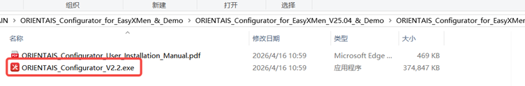
选择安装语言。
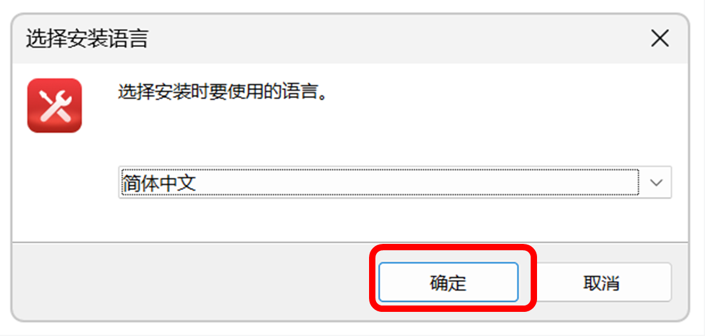
选择安装目录（建议不要包含中文路径），阅读并接受许可协议。
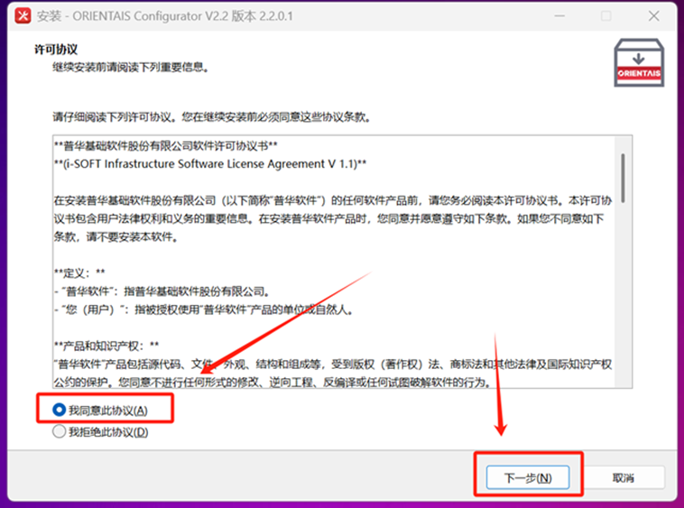
等待安装完成，点击Finish结束安装，安装界面如下图所示：
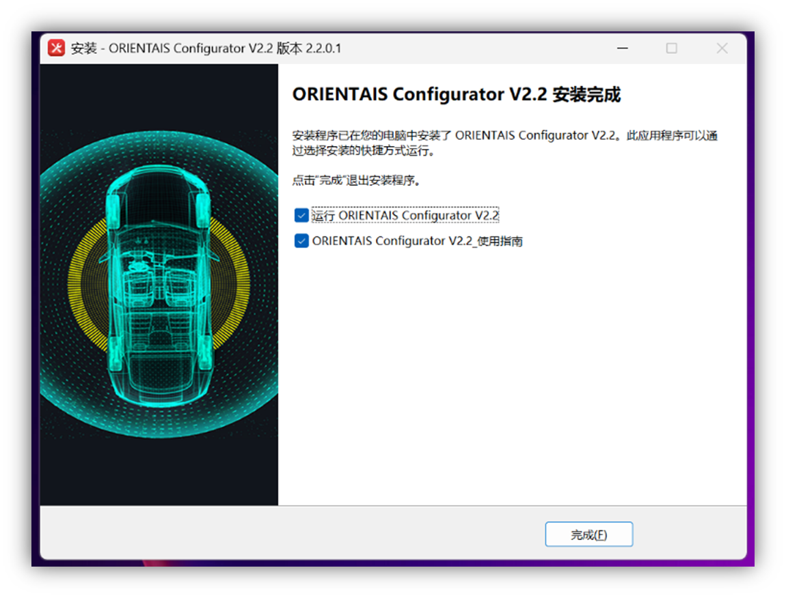
安装完成后，在开始菜单或桌面可找到ORIENTAIS Configurator for EasyXMen快捷方式。
2 BSW配置工具编译调试¶
2.1 MCAL工程导入与校验生成配置代码¶
将MCAL配置工程导入EB工具并生成配置代码的流程：
打开EB tresos Studio。
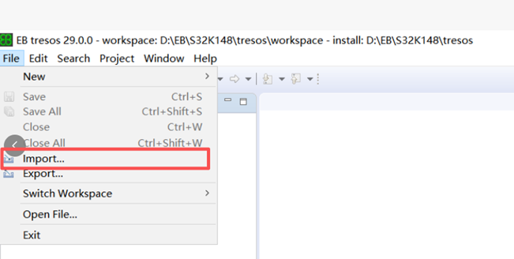
选择File > Import > Existing Projects into Workspace。
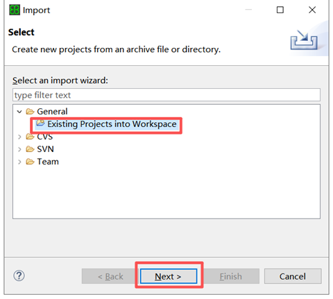
浏览选择Demo_S32K148_ASR470_MCAL_V200_QLP1_ConfigProject工程目录，勾选工程后点击Finish完成导入。
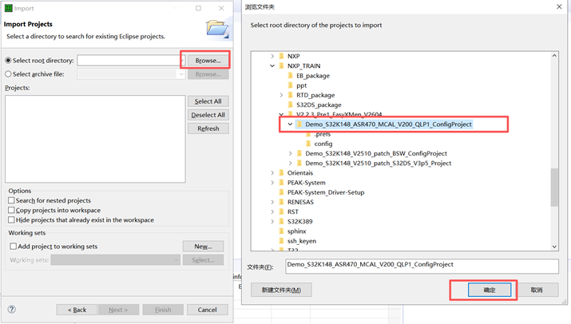
在Project Explorer中双击工程名称打开配置界面。
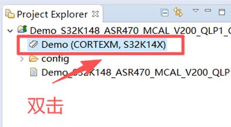
根据需要修改MCAL各模块的配置参数。
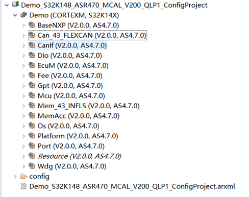
点击工具栏的验证按钮（或按F5）进行工程校验，校验通过后点击生成按钮（Generate）生成配置代码。
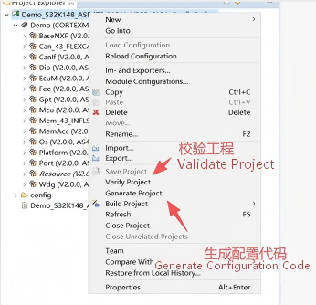
生成的代码位于工程目录的output文件夹中。
2.2 BSW配置工具功能简介¶
导入已有BSW配置工程的方法
选择File > Import > Existing Project。
浏览选择已有的BSW配置工程目录。
选择需要导入的工程，点击Finish。
工程导入后可在Project Explorer中查看工程结构。
向工程中添加AUTOSAR功能模块：
在Autosar Explorer视图中右键点击工程名称。
选择Add Module打开模块选择对话框。
从列表中选择需要添加的模块（可多选）。
点击OK确认添加，模块将显示在工程树中。
从工程中删除AUTOSAR功能模块：
在BSW配置工具中可以查看和导入MCAL配置信息：在工程树中找到MCAL配置节点，双击MCAL节点可打开MCAL配置查看界面，可以浏览MCAL各模块（Port、Dio、Adc等）的配置参数。
注意：打开MCAL配置后会参与整体工程校验，确保MCAL配置与BSW配置的一致性。
对于支持服务封装的模块，可以生成服务层组件代码：在工程树中右键点击支持服务封装的模块，选择Generate Service Wrapper选项，在弹出的对话框中配置服务接口参数，点击Generate生成服务封装代码。
服务封装功能可将底层BSW接口封装为标准化服务接口，便于上层应用软件的调用和集成。
2.2.1 与MCAL配置信息的交互¶
2.2.1.1 与EB工具交互¶
从EB tresos导出MCAL配置并导入BSW配置工具的流程：在EB tresos中打开MCAL配置工程，右键点击MCAL配置中的ECU节点，选择Im- and Exporter > Export，选择导出格式为ARXML，设置导出路径，点击OK完成导出。
EB tresos导出MCAL配置的ARXML文件界面如下图所示：
打开BSW配置工具，右键点击Project，选择Import Module From Other Arxml，选择从EB导出的ARXML文件，点击OK导入。导入的MCAL配置信息将显示在工程树中。
2.2.1.2 与Davinci工具交互¶
从DaVinci Configurator导出配置并导入BSW配置工具：在DaVinci中打开工程，选择File > Export > Export ARXML，选择导出内容和目标路径，在小满配置工具中选择Import > ARXML File导入。
2.3 示例工程演示¶
2.3.1 示例工程说明¶
S32K148示例工程包含以下文件和内容：
文件/目录名称 |
说明 |
|---|---|
Demo_S32K148_ASR470_MCAL_V200_QLP1_ConfigProject |
MCAL配置工程（EB工具） |
Demo_S32K148_V2510_patch_BSW_ConfigProject |
BSW配置工程（BSW配置工具） |
Demo_S32K148_V2510_patch_S32DS_V3p5_Project |
MCAL+BSW集成示例工程（S32DS） |
示例工程说明 |
S32K148示例工程配置说明文档 |
建议按照以下顺序使用示例工程：首先查看示例工程说明文档了解工程整体结构和功能；打开并编译MCAL配置工程验证MCAL配置正确；打开并编译BSW配置工程验证BSW配置正确；最后编译集成工程，生成可烧录的目标文件。
2.3.2 示例BSW配置工程导入及编译¶
导入和编译BSW配置工程的步骤：
启动ORIENTAIS Configurator配置工具，选择File > Import > Existing Project。
浏览选择Demo_S32K148_V2510_patch_BSW_ConfigProject目录。
导入完成后在工程树中查看各模块配置。
点击Validate All校验工程配置。
校验通过后编译工程或生成配置代码。
2.3.3 BSW配置工程代码生成¶
从BSW配置工程生成代码的步骤：确保BSW配置工程已导入且校验通过；点击工具栏的Generate All按钮；在弹出的对话框中确认代码生成选项；选择代码输出目录（或保持默认）；等待代码生成完成，查看Console中的生成日志；在输出目录中检查生成的.c和.h文件。
3 示例工程编译调试¶
3.1 示例工程导入编译¶
将集成工程导入S32DS并编译的步骤：
启动S32 Design Studio。
右键导入过的工程，点击Build。
等待编译完成，确认Console中没有错误。
编译生成的.hex或.elf文件位于Debug目录中。
3.2 硬件环境¶
进行示例工程调试需要准备以下硬件环境：
硬件连接步骤：将S32K148EVB开发板放置在绝缘的工作台上；使用USB线连接开发板的USB接口和电脑；确认开发板电源指示灯亮起（绿色LED）；如需CAN通信测试，连接CAN工具到开发板的CAN接口。
3.3 在线调试¶
使用S32DS进行在线调试的步骤：
确保开发板已通过USB连接到电脑且驱动正常安装。
在S32DS中打开集成工程。
点击工具栏的Debug按钮（或按F11）启动调试。
在弹出的对话框中选择调试器类型（PEMicro或J-Link）。
等待程序下载到开发板并自动运行到main函数。
使用单步执行（F6）、断点、变量查看等功能进行调试。
常见问题排查：如果无法连接开发板，检查USB驱动是否正确安装；确认Debug配置中选择的调试器与实际硬件匹配；检查开发板跳线帽设置是否正确（参考开发板用户手册）。
4 社区问题反馈¶
在使用开源小满的过程中，如果遇到问题或有任何建议，欢迎前往 项目主页 找到对应的仓库提交Issue。